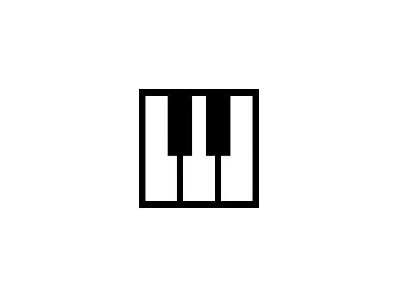
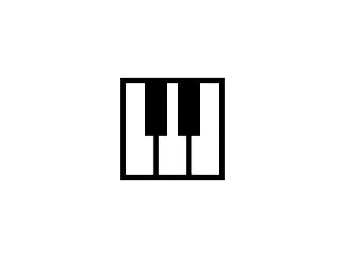

intrests

reading non fiction books
cycling every weekend
playing the piano
contact
rue lyion tolstoy, la soukra
53 828 200
feryelaaouni@gmail.com

feryel ouni

feryel ounii
reading non fiction books
cycling every weekend
playing the piano
rue lyion tolstoy, la soukra
53 828 200
feryelaaouni@gmail.com
feryel ouni
feryel ounii
nvjjqdjdqfontAstrology is a pseudoscience and a form of divination that claims to disc ern information about human affairs and terrestrial events by studying the movements a nd relative positions of celestial objects.[1][2][3][4][5] Astrology has been practiced since at least the 2nd millennium BCE, and has its roots in calendrical systems used to predict seasonal shifts and to interpret celestial cycles as signs of divine communications.[6] Most, if not all, cultures have attached importance to what they observed in the sky, and some—such as the Hindus, Chinese, and the Maya—developed elaborate systems for predicting terrestrial events from celestial observations. Western astrology, one of the oldest astrological systems still in use, can trace its roots to 19th–17th century BCE Mesopotamia, from where it spread to Ancient Greece, Rome, the Arab world and eventually Central and Western Europe. Contemporary Western astrology is often associated with systems of horoscopes that purport to explain aspects of a person's personality and predict significant events in their lives based on the positions of celestial objects; the majority of professional astrologers rely on such systems.[7]: 83 Throughout most of its history, astrology was considered a scholarly tradition and was common in academic circles, often in close relation with astronomy, alchemy, meteorology, and medicine.[8] It was present in politAstrology is a pseudoscience and a form of divination that claims to discern information about human affairs and terrestrial events by studying the movements and relative positions of celestial objects.[1][2][3][4][5] Astrology has been practiced since at least the 2nd millennium BCE, and has its roots in calendrical systems used to predict seasonal shifts and to interpret celestial cycles as signs of divine communications.[6] Most, if not all, cultures have attached importance to what they observed in the sky, and some—such as the Hindus, Chinese, and the Maya—developed elaborate systems for predicting terrestrial events from celestial observations. Western astrology, one of the oldest astrological systems still in use, can trace its roots to 19th–17th century BCE Mesopotamia, from where it spread to Ancient Greece, Rome, the Arab world and eventually Central and Western Europe. Contemporary Western astrology is often associated with systems of horoscopes that purport to explain aspects of a person's personality and predict significant events in their lives based on the positions of celestial objects; the majority of professional astrologers rely on such systems.[7]: 83 Throughout most of its history,
ronomy, alchemy, meteorology, and medicined a scholarly tradition and was common in academic circles, often in close relation with astronomy, alchemy, meteorology, and medicine.[8] It was present in politThroughout most of its history, hhhhhhhhhhhhhhhhhhhhhhhhhhhhhhhhhhhhhhhhhh It was present in politThroughout most of its history, astrology was considered a scholarly tradition and was common in academic circles, often in close relation with astronomy, alchemy, meteorology, a It was present in politThroughout most of its history, astrology was considered a scholarly tradition and was common in academic circles, often in close relation with astronomy, alchemy, meteorology, and medicin It was present in politThroughout most of its history, astrology was considered a scholarly tradition and was common in academic circles, often in close relation with astronomy, alchemy, meteorology, and medicine.[8]It was present in politThroughout most of its history, astrology was considered a scholarly tradition
english
frensh
arabic